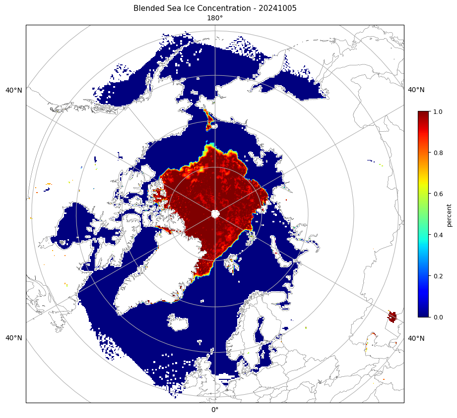

# Load/install the required non-standard Python packages
!pip install cartopy
!pip install netCDF4
!pip install pyresample
!pip install ecmwflibs
!pip install xarray
!pip install rioxarray
!pip install rasterio
!pip install --upgrade rasterio rioxarray
# Ensure the Google Drive is mounted
Visualizing JPSS Sea Ice Concentration products using Google Colab
This Jupyter Notebook was designed to assist you in visualizing JPSS SI data. There are other notebooks for other types of JPSS products.
We will walk through the steps to accomplish our visualization goal. First, retrieve the desired Level-2 (VIIRS) from NOAA CLASS or Level-3 (Blended SIC) data from SSEC or NOAA PolarWatch. Reminder - an account (free) is required for CLASS access. Upload these files to your Google drive. Level-2 data is swath data while Level-3 data is daily global gridded data. You may find the UW/SSEC Polar Orbit Tracks site helpful for specifying the date/time when ordering swath data.
In this notebook, there are several cells that need execution. You can step through them and learn about Python scripts and Jupyter Notebooks in the process.
Notes
Jupyter Notebooks are made up of code cells and text cells. Code cells contain executable code and its output, while text cells contain explanatory text - like this cell.
Each code cell has a play icon at the left gutter of the cell. Press play to execute the cell’s tasks, or hit Cmd/Ctrl+Enter. Note - sometimes the play icon is not shown (showing only empty brackets) unless your cursor hovers over it.
Any text or image output resulting from execution of a code cell is displayed right below the code cell - or you’ll see an ‘elapsed processing time beside a checkmark’ near the play icon - or both.
Some text cells are ‘section headers’, denoted by a “>” (greater than) sign. The “>” can be pressed to expand (show) the cells under it (down to the next section header). That turns the “>” into a “\/” (chevron), which can then be pressed to collapse (hide) its cells.
Load/install required packages & Mount Google Drive
Modify the Python script and Run it
Within Google Colab, you can access your Google Drive directories. At the far left of the Google Colab screen, press the simple folder icon. This will expand the left-most panel, showing your available Google drives. Navigate the directories to find your file, select it, and Right-Click to select “Copy path”. Then paste that result into the Filename variable in the next cell (below), like so:
Filename = ‘MyDrive/ColabNotebooks/JPSS_Soil_Data/AMSR2-SOIL_v2r2_GW1_s20240210122904_e20240210123456_.nc’
or
Filename = ‘MyDrive/ColabNotebooks/JPSS_Soil_Data/NPR_SMOPS_CMAP_D20240131.nc’
Next, choose one of the recognized domains, placing it into the Domain variable below.
Finally, specify the location where you want the output PNG files to be created; in the Out_dir_L2 and Out_dir_L3 variables for level-2, and level-3 output, respectively. Execute this cell with the ‘play’ icon.
# Specify Filename
#Filename = '/content/drive/MyDrive/ColabNotebooks/JPSS_SIC/JRR-IceConcentration_v3r3_j01_s202403070044010_e202403070045255_c202403070121021.nc'
#Filename = '/content/drive/MyDrive/ColabNotebooks/JPSS_SIC/Blended_SIC_N20_2020_350_12_15_0000_2400_north.tiff' # SSEC
#Filename = '/content/drive/MyDrive/ColabNotebooks/JPSS_SIC/Blended_AMSR2_VIIRS_SIC_2023_135_05_15_2346_2357.tiff' # GINA (swath)
#Filename = '/content/drive/MyDrive/ColabNotebooks/JPSS_SIC/Polar-AMSR2VIIRSBLEND_j01_v01r00_Nhem_0000_2400_d20240804_c20240805.nc' # PolarWatch
Filename = '/content/drive/MyDrive/ColabNotebooks/JPSS_SIC/Polar-AMSR2VIIRSBLEND_j01_v01r00_Nhem_0000_2400_d20241005_c20241007.nc' # PolarWatch
#Filename = '/content/drive/MyDrive/ColabNotebooks/JPSS_SIC/nesdis_blendedsic_nhem_daily_79da_d8e9_7b6a_U1723144597211.nc' # PolarWatch
# Specify 1 of the recognized domains:
# arctic, antarctic
Domain = 'arctic'
# Specify the output directory
Out_dir_L2 = '/content/drive/MyDrive/ColabNotebooks/JPSS_SIC/Output_L2'
Out_dir_L3 = '/content/drive/MyDrive/ColabNotebooks/JPSS_SIC/Output_L3'This portion of code imports required Python packages, as well as defining the domains to be recognized by the script. You can add your own domain, or change on of the existing ones, in the ‘domains’ dictionary.
import os
import re
import sys
from time import gmtime, strftime
import cartopy.feature as cfeature
import cartopy.crs as ccrs
import netCDF4
import matplotlib.pyplot as plt
import numpy as np
import pyresample as pr
import rioxarray as rio
from pyresample.geometry import SwathDefinition
from pathlib import Path
import ecmwflibs # This little bugger is required to find the eccodes library!!!!
ecmwflibs.find("eccodes") # This line is simply to *use* the imported ecmwflibs module
# geographic regions
domains = {
'world':{ # region
'states':False, # state outlines?
'shape':(1000, 500), # size (x,y)
'area_extent':(-180, -90, 180, 90) # lat/lon extent (degrees) (W,S,E,N)
},
'arctic':{
'states':False,
'shape':(700, 700),
'area_extent':(-180, 50, 180, 90)
},
'antarctic':{
'states':False,
'shape':(700, 700),
'area_extent':(-180, -90, 180, -55)
},
}These classes, or functions (SIC_L2 and SIC_L3), handle the Level-2 (swath) VIIRS SIC files and the Level-3 (gridded) Blended files.
class SIC_L2:
"""Level2 SIC files"""
def __init__(self, domain: str, fil: str):
self.domain = domain
self.fil = fil
self.lats = []
self.lons = []
self.data = []
self.plot_data()
def plot_data(self):
"""Plot the data, overlay with a map, colormap, and label"""
print(f'Reading file {self.fil}')
f = rio.open_rasterio(self.fil, band_as_variable=True)
# Get data
data_tmp = f.IceConc.values
x_tmp = f.Longitude.values
y_tmp = f.Latitude.values
subsam = 20
# Subsample if needed and Mask out out-of-bounds values
self.lats = y_tmp[::subsam, ::subsam].squeeze()
self.lons = x_tmp[::subsam, ::subsam].squeeze()
self.data = data_tmp[::subsam, ::subsam].squeeze()
# Get date and time from filename
ymd, hm = re.search(r's(?P<ymd>\d{8})(?P<hm>\d{4})',
os.path.basename(self.fil)).groups()
print('ymd=', ymd, 'hm=', hm)
# Min and Max for SIC percentage
vmin, vmax = 0.0, 100.0
# Get center lat/lon
ctr_lon = (domains[self.domain]['area_extent'][2]+domains[self.domain]['area_extent'][0]) / 2
print('ctr_lon=', ctr_lon)
# Define PROJ4 target projection (stere = stereographic)
proj4 = {'proj': 'stere', 'lat_0': 90.0, 'lon_0': ctr_lon,
'ellps': 'WGS84', 'units': 'm'}
# Create pyresample AreaDefinition
area_def = pr.create_area_def(
self.domain,
proj4,
description = 'stereographic',
units = 'deg',
shape = domains[self.domain]['shape'],
area_extent = domains[self.domain]['area_extent']
)
# Create a cartopy CRS object (from pyresample)
crs = area_def.to_cartopy_crs()
# Define the swath projection
swath_def = SwathDefinition(self.lons, self.lats)
# resample swath data (self.data) to the target grid using nearest neighbour method
result = pr.kd_tree.resample_nearest(swath_def, self.data, area_def,
radius_of_influence=30000,
fill_value=None)
# Prepare picture
fig = plt.figure(figsize=(12, 8))
ax = plt.axes(projection=crs)
ax.add_feature(cfeature.COASTLINE.with_scale('50m'), linewidth=0.25, edgecolor='black')
ax.add_feature(cfeature.BORDERS.with_scale('50m'), linewidth=0.25)
if domains[self.domain]['states']:
ax.add_feature(cfeature.STATES.with_scale('50m'), linewidth=0.1)
# Title
title = f'NOAA JPSS NOAA-20 VIIRS (Sea Ice Conc.) - {ymd} {hm} UTC'
units = '%'
# Display picture
result = np.float64(result) # only to remove a runtime "overflow" warning
ax.imshow(result, transform=crs, extent=crs.bounds,
cmap='jet_r', origin='upper', vmin=vmin, vmax=vmax)
ax.set_title(title, fontsize=11)
# Add color legend
sic = plt.cm.ScalarMappable(cmap='jet_r', norm=plt.Normalize(vmin, vmax))
cbar = plt.colorbar(sic, ax=ax, shrink=0.45, pad=0.03)
# ...with tick marks and labels
cbar.ax.tick_params(labelsize=9)
cbar.set_label(units, size=9)
# Display image in Google Colab
plt.show()
# Save as PNG
pngname = (f'{Out_dir_L2}/{ymd}_{hm}_VIIRS_SIC_{self.domain}.png')
print(f'{strftime("%Y-%m-%d %H:%M:%S", gmtime())} - Saving PNG {pngname}')
fig.savefig(f'{pngname}', bbox_inches='tight', dpi=200)
# Verify/notify write success
if not os.path.isfile(f'{pngname}'):
print(f'Error: {pngname} NOT saved')
# Close plot
plt.close()
################################################################################
################################################################################
class SIC_L3:
"""Level3 Blended SIC NetCDf & GeoTIFF files"""
def __init__(self, domain: str, fil: str):
self.domain = domain
self.fil = fil
# Prep projection (EASE-Grid 2.0 - - - EPSG:6931, NPole)
self.ease_proj = ccrs.LambertAzimuthalEqualArea(central_latitude=90.)
self.cart_proj = ccrs.PlateCarree(central_longitude=0.0)
self.plot_data()
def convert_cart_laea(self, lats:list, lons:list) -> tuple[int, int, int, int]:
"""Convert each point of the region's lat/lon polygon to LAEA coords (meters)
Args:
lons:list of longitude values
lats:list of latitude values
Returns: min_x, max_x, min_y, max_y (meters) (integer)
"""
min_x = min_y = float('inf')
max_x = max_y = float('-inf')
# Perform transforms on all points of polygon
for lat in lats:
for lon in lons:
x, y = self.ease_proj.transform_point(lon, lat, src_crs=self.cart_proj)
min_x = min(min_x, x)
max_x = max(max_x, x)
min_y = min(min_y, y)
max_y = max(max_y, y)
return(int(min_x), int(max_x), int(min_y), int(max_y))
def find_value_address_in(self, list:list, value:int) -> tuple[int, int]:
"""Find address of value in monotonically increasing or decreasing list
Args:
list: list of values
value: value to find
Returns: address, direction (0 or 1)
"""
if list[0] < list[1]:
# increasing/normal
dir = 1
for j, i in enumerate(list):
if i >= value:
break
else:
# decreasing/abnormal
dir = 0
for j, i in enumerate(list):
if i <= value:
break
return j, dir
def plot_data(self):
"""Read data, create sample Plot of Blended SIC data
"""
# Check consistency of request
print(self.domain)
if self.domain not in ['arctic', 'antarctic']:
raise ValueError(f'Only arctic and antarctic currently supported')
self.ctr_lat = 90. if self.domain == 'arctic' else -90.
# Read NetCDF/GeoTIFF
print(f'Reading file {self.fil}')
f = rio.open_rasterio(self.fil, band_as_variable=True)
print('type(f)=', type(f))
# Set full and half size variables
full = f.rio.width
half = int(full/2)
# quadrant x,y starting values (meters) (in the full array)
# Dateline-90W 90W-Prime Prime-90E 90E-Dateline hemisphere
start = {'nw':[0, 0], 'sw':[0, half], 'se':[half, half], 'ne':[half, 0], 'full':[0, 0]}
# Define regions dict with series of lat,lon pairs (3 or more pairs)
regions = {
'alaska':[59,-141,
55,-163,
60,-168,
68,-167,
70,-140],
'greenland':[59,-70,
84,-70,
84,-10,
59,-10],
'hudsonbay':[52,-95,
52,-72,
69,-72,
69,-95],
'uk':[50,-10,
50,2,
60,2,
60,-10]}
# Each region's list does not need to be a closed polygon
# Parameters
vmin, vmax = 0.0, 100.0
domain = 'full'
subsam = 20
print('domain=', domain)
# Subset & Subsample
if domain == 'full': # full polar EASE
data = f.band_1.values[start[domain][0]:start[domain][0]+full:subsam, start[domain][1]:start[domain][1]+full:subsam]
x = f.x.values[start[domain][0]:start[domain][0]+full:subsam]
y = f.y.values[start[domain][1]:start[domain][1]+full:subsam]
elif domain in ['nw', 'ne', 'sw', 'se']: # EASE quadrants
data = f.band_1.values[start[domain][1]:start[domain][1]+half:subsam, start[domain][0]:start[domain][0]+half:subsam]
x = f.x.values[start[domain][0]:start[domain][0]+half:subsam]
y = f.y.values[start[domain][1]:start[domain][1]+half:subsam]
else: # polygon
data_tmp = f.band_1.values
x_tmp = f.x.values
y_tmp = f.y.values
# Fill lats/lons arrays with coords
lats = [regions[domain][i] for i in range(0, len(regions[domain]), 2)] # even
lons = [regions[domain][i] for i in range(1, len(regions[domain]), 2)] # odd
# Find min and max of x and y values (meters in LAEA proj space)
x1, x2, y1, y2 = self.convert_cart_laea(lats, lons)
print('polygon coords in LAEA meters:', x1, x2, y1, y2)
# Locate min/max x/y values in the x and y lists
col1, xdir = self.find_value_address_in(x_tmp, x1)
col2, xdir = self.find_value_address_in(x_tmp, x2)
row1, ydir = self.find_value_address_in(y_tmp, y1)
row2, ydir = self.find_value_address_in(y_tmp, y2)
print('col1=', col1, 'col2=', col2, 'row1=', row1, 'row2=', row2)
if xdir:
x = x_tmp[col1:col2:subsam]
if ydir:
data = data_tmp[row1:row2:subsam, col1:col2:subsam]
else:
data = data_tmp[row2:row1:subsam, col1:col2:subsam]
else:
x = x_tmp[col2:col1:subsam]
if ydir:
data = data_tmp[row1:row2:subsam, col2:col1:subsam]
else:
data = data_tmp[row2:row1:subsam, col2:col1:subsam]
if ydir:
y = y_tmp[row1:row2:subsam]
else:
y = y_tmp[row2:row1:subsam]
print(col1, col2, row1, row2)
print('data shape=', data.shape)
#plt.hist(data, density=True, bins=10)
#plt.show()
# Get date from filename Polar-AMSR2VIIRSBLEND_
if '_AMSR2_VIIRS_SIC_' in self.fil:
data[data>100] = np.nan
ymd_txt = re.search(r'Blended_AMSR2_VIIRS_SIC_(\d{4})_\d{3}_(\d{2})_(\d{2})', os.path.basename(self.fil))
ymd = (ymd_txt.group(1) + ymd_txt.group(2) + ymd_txt.group(3))
elif 'Blended_SIC_' in self.fil:
data[data>100] = np.nan
# Blended_SIC_N20_2020_350_12_15_0000_2400_north.tiff
ymd_txt = re.search(r'Blended_SIC_N20_(\d{4})_\d{3}_(\d{2})_(\d{2})', os.path.basename(self.fil))
ymd = (ymd_txt.group(1) + ymd_txt.group(2) + ymd_txt.group(3))
elif 'Polar-AMSR2VIIRSBLEND_' in self.fil:
data[data>100] = np.nan
ymd_txt = re.search(r'Polar-AMSR2VIIRSBLEND_..._v..r.._Nhem_0000_2400_d(\d{4})(\d{2})(\d{2})', os.path.basename(self.fil))
ymd = (ymd_txt.group(1) + ymd_txt.group(2) + ymd_txt.group(3))
elif 'nesdis_blendedsic_nhem_daily_' in self.fil:
data[data>100] = np.nan
ymd = 'YYYYMMDD'
else:
sys.exit('Not a valid file type')
# Prepare figure
fig = plt.figure(figsize=(12, 12))
axm = plt.subplot(projection = self.ease_proj)
axm.set_title(f'Blended Sea Ice Concentration - {ymd}', fontsize=11)
# Add map features
axm.add_feature(cfeature.COASTLINE.with_scale('50m'), linewidth=0.25, edgecolor='black')
axm.add_feature(cfeature.BORDERS.with_scale('50m'), linewidth=0.25)
if domains[self.domain]['states']:
axm.add_feature(cfeature.STATES.with_scale('50m'), linewidth=0.1)
axm.gridlines(draw_labels=True)
# Add color bar with 'jet' cmap
sic = plt.cm.ScalarMappable(cmap='jet')
cbar = plt.colorbar(sic, ax=axm, shrink=0.45, pad=0.03)
# ...with tick marks and labels
cbar.ax.tick_params(labelsize=9)
cbar.set_label('percent', size=9)
# Display image in Google Colab
axm.imshow(data, cmap='jet', transform=self.ease_proj, vmin=vmin, vmax=vmax,
extent=(x.min(), x.max(), y.min(), y.max()))
plt.show()
# Save as PNG
pngname = (f'{Out_dir_L3}/{ymd}_Blended_AMSR2VIIRS_SIC_{self.domain}.png')
print(f'{strftime("%Y-%m-%d %H:%M:%S", gmtime())} - Saving PNG {pngname}')
fig.savefig(pngname, bbox_inches='tight', dpi=200)
# Verify/notify write success
if not os.path.isfile(pngname):
print(f'Error: {pngname} NOT saved')
# Close figure
plt.close()Finally, execute the code below. Either SIC_L2 or SIC_L3 will be executed, depending on which type of file you’ve specified. You may have to scroll down a bit to see the resulting image here in Colab, but a PNG file will be generated, as well.
Note: During the first execution of this script, the Python module ‘Cartopy’ will need to download map-related files from “Natural Earth”. You will see Python-generated warning messages for this.
# Verify data file exists
if not os.path.exists(f'{Filename}'):
sys.exit(f'{Filename} does not exist')
# Determine data type and call its procedure
if Filename.find('JRR-IceConcentration', 0) != -1: # CLASS
# Verify L2 output directory exists
if not os.path.isdir(f'{Out_dir_L2}'):
sys.exit(f'Output directory {Out_dir_L2} does not exist')
SIC_L2(Domain, f'{Filename}')
elif Filename.find('Blended_', 0) != -1: # SSEC/GINA
# Verify L3 output directory exists
if not os.path.isdir(f'{Out_dir_L3}'):
sys.exit(f'Output directory {Out_dir_L3} does not exist')
print('calling SIC_L3', Domain, Filename)
SIC_L3(Domain, f'{Filename}')
elif Filename.find('nesdis_blendedsic_nhem_daily_', 0) != -1: # PolarWatch
# Verify L3 output directory exists
if not os.path.isdir(f'{Out_dir_L3}'):
sys.exit(f'Output directory {Out_dir_L3} does not exist')
print('calling SIC_L3', Domain, Filename)
SIC_L3(Domain, f'{Filename}')
elif Filename.find('Polar-AMSR2VIIRSBLEND_', 0) != -1: # PolarWatch
# Verify L3 output directory exists
if not os.path.isdir(f'{Out_dir_L3}'):
sys.exit(f'Output directory {Out_dir_L3} does not exist')
print('calling SIC_L3', Domain, Filename)
SIC_L3(Domain, f'{Filename}')
else:
sys.exit('File must be: Blend or ????')
###############################################################################calling SIC_L3 arctic /content/drive/MyDrive/ColabNotebooks/JPSS_SIC/Polar-AMSR2VIIRSBLEND_j01_v01r00_Nhem_0000_2400_d20241005_c20241007.nc
arctic
Reading file /content/drive/MyDrive/ColabNotebooks/JPSS_SIC/Polar-AMSR2VIIRSBLEND_j01_v01r00_Nhem_0000_2400_d20241005_c20241007.ncWARNING:rasterio._env:CPLE_AppDefined in Unhandled X/Y axis unit meters. SRS will ignore axis unit and be likely wrong.
WARNING:rasterio._env:CPLE_AppDefined in Unhandled X/Y axis unit meters. SRS will ignore axis unit and be likely wrong.type(f)= <class 'xarray.core.dataset.Dataset'>
domain= full
data shape= (452, 452)/usr/local/lib/python3.10/dist-packages/cartopy/io/__init__.py:241: DownloadWarning: Downloading: https://naturalearth.s3.amazonaws.com/50m_physical/ne_50m_coastline.zip
warnings.warn(f'Downloading: {url}', DownloadWarning)
/usr/local/lib/python3.10/dist-packages/cartopy/io/__init__.py:241: DownloadWarning: Downloading: https://naturalearth.s3.amazonaws.com/50m_cultural/ne_50m_admin_0_boundary_lines_land.zip
warnings.warn(f'Downloading: {url}', DownloadWarning)
2024-10-08 16:52:13 - Saving PNG /content/drive/MyDrive/ColabNotebooks/JPSS_SIC/Output_L3/20241005_Blended_AMSR2VIIRS_SIC_arctic.png